242
Áreas e volumes

Campos dos Goytacazes, RJ, 2019.
243
Divulgação/ Prefeitura Municipal de Campos dos Goytacazes
O Imposto Predial Territorial Urbano (IPTU) é um tributo municipal que incide sobre terrenos e edificações e é cobrado anualmente. O cálculo desse tributo é baseado no valor de mercado dos imóveis, o qual, por sua vez, é determinado segundo alguns critérios estabelecidos por lei municipal. Confira alguns desses critérios:
► tipo do imóvel (terreno, casa, apartamento, loja, etc.);
► área e ocupação;
► ano e padrão de acabamento da construção;
► localização do imóvel.
O dinheiro arrecadado com o IPTU deve retornar à população em forma de obras públicas, educação, saúde e programas sociais.
converse
1. Acima temos o IPTU referente a um terreno da cidade de Campo dos Goytacazes no estado do Rio de Janeiro do ano de 2022. De acordo com as informações que constam no talão, qual a área do terreno?
2. Como você descreveria esse terreno (características, localização, etc.)?
3. No caso apresentado, a alíquota do IPTU é igual a 1,2% do valor total do terreno. Qual é o valor aproximado que o proprietário desse terreno pagou de IPTU no ano de 2022?
244
Área de polígonos
Patrícia gosta muito de pintar. Hoje ela resolveu fazer uma tela com mosaico. Observe:

Agora vamos relembrar como calcular a área de algumas figuras geométricas planas.
Área do retângulo
Joaquim deseja revestir o piso do corredor de sua casa com carpete de madeira. O corredor tem 2 m de largura por 6 m de comprimento. Antes de efetuar a compra do carpete, ele precisa saber qual é a área total que será revestida. Como ele poderá fazer este cálculo?
245
O cálculo poderá ser feito considerando como unidade de medida um quadrado de 1 m de lado. Vamos representá-lo por meio de um desenho. Observe:
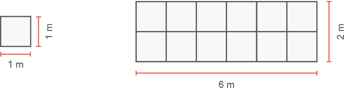
Note que no espaço do corredor “cabem” 12 quadradinhos de 1 m2. Portanto, essa área tem 12 m2.
Para calcularmos a área de uma região retangular, também podemos multiplicar a medida do comprimento pela medida da largura, ou seja:
A = 2 m ∙ 6 m = 12 m2
A área a ser revestida com o carpete de madeira é 12 m2.
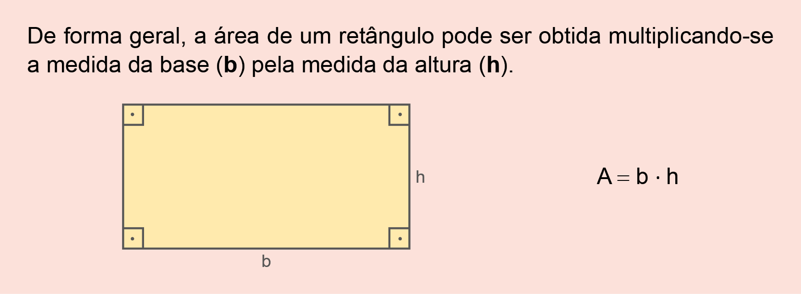
Área do quadrado
Mônica comprou uma casa recentemente e, em seu jardim, há um canteiro de 4 m de largura por 4 m de comprimento, no qual ela pretende plantar flores. Antes de comprar as sementes, ela deseja saber a área total desse canteiro. Como ela pode fazer esse cálculo?
246
Para efetuar o cálculo, Mônica precisa verificar quantos quadradinhos de 1 m de lado “cabem” em uma região de 4 m de largura por 4 m de comprimento.
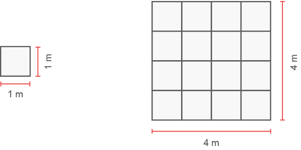
Nesta região de 4 m por 4 m “cabem" 16 quadradinhos de 1 m2. Portanto, a sua área é 16 m2.
A área do canteiro é igual a 16 m2.
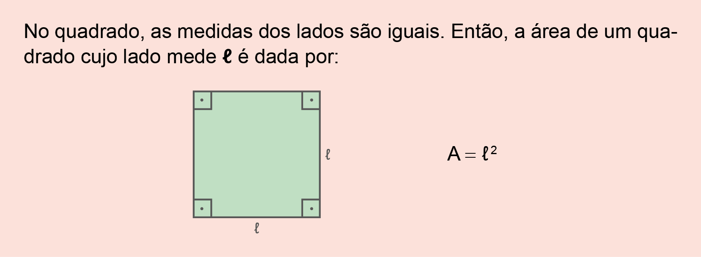
Área do paralelogramo
Considere o paralelogramo ABCD. Nele, vamos traçar a altura BH , relativa à base AD .
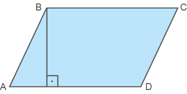
Note que, ao traçamos a altura, formam-se dois polígonos: o triângulo ABH e o trapézio BCDH.
247
Recortando o triângulo ABH e posicionando-o de modo que seu lado AB coincida com o lado CD do trapézio, temos:
Logo, a área do paralelogramo é equivalente à área do retângulo.
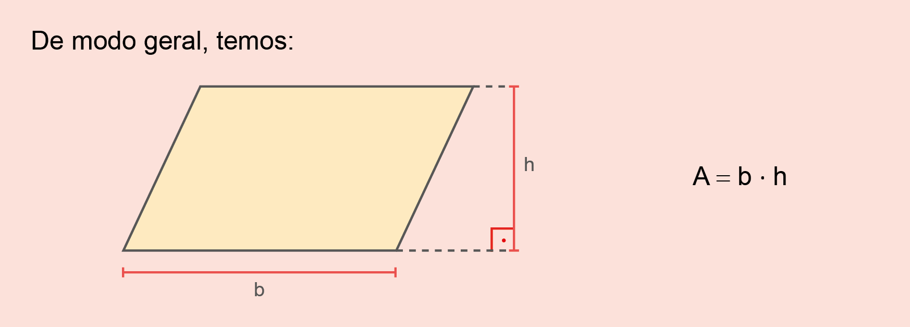
Área do losango
Observe o retângulo ABCD. Os pontos M, N, O e P são pontos médios dos lados AB, BC, CD e AD , respectivamente.
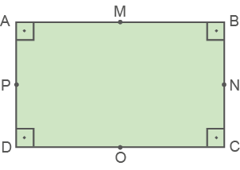
Unindo os pontos médios, obtém-se o losango MNOP:

248
Traçando a diagonal maior e a diagonal menor do losango, temos:
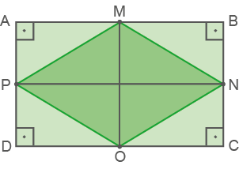
Observe que o retângulo ABCD contém 8 triângulos congruentes, sendo que 4 deles formam o losango MNOP. Assim, concluímos que a área do losango MNOP é igual à metade da área do retângulo ABCD.
Portanto:
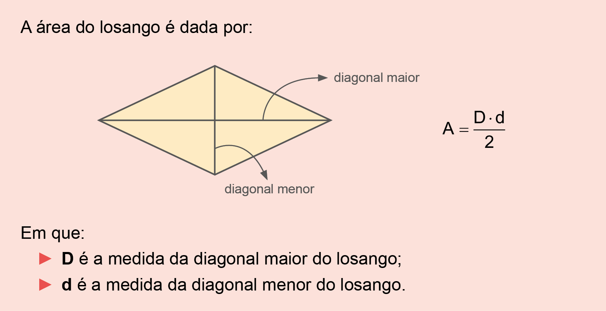
Área do trapézio
Dado o trapézio:
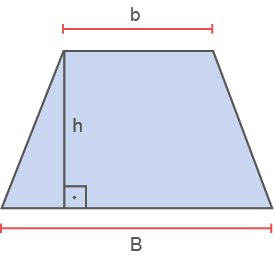
Juntando-o a outro trapézio idêntico, de maneira a formar um paralelogramo, temos:
249
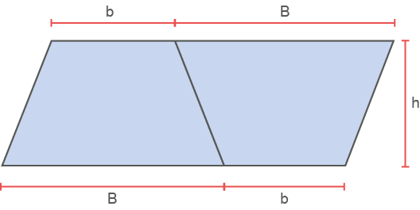
O paralelogramo formado tem área dada por (B + b) · h.
Note que a área do trapézio é a metade da área do paralelogramo formado.
Logo:
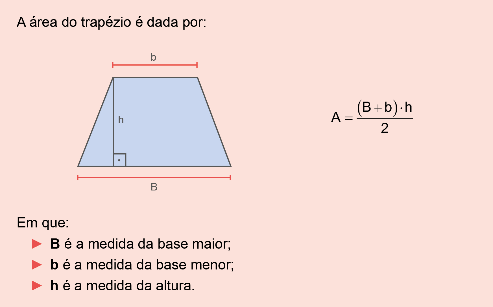
Encontre soluções
Sabendo-se que 1 hectare equivale a 10 000 m2 e que o preço de 1 hectare, nessa região, é R$ 30.000,00, qual é o preço dessa chácara?
250
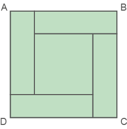
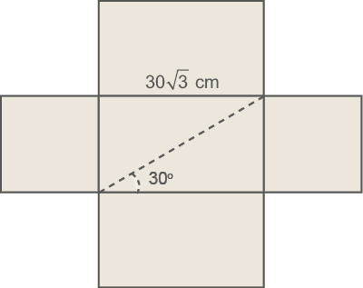
- Qual é a medida do perímetro dessa casa?

251
- A diretora dessa escola quer cimentar o pátio. Sabendo-se que o preço do metro quadrado cimentado é R$ 4,00, qual será o custo para revestir esse pátio com cimento?
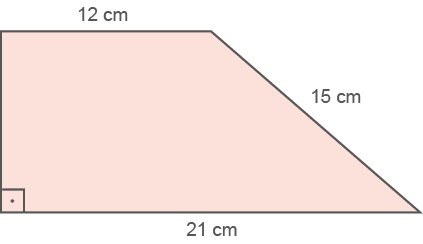
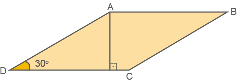
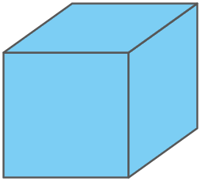
AB = 8 cm, AD = 6 cm e os ângulos internos de vértices A e B medem 60º. Determine a área do quadrilátero ABCD.
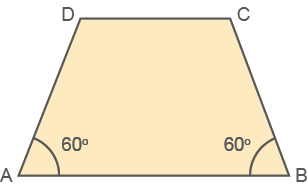
252


253
Área do triângulo
Ao traçarmos uma das diagonais em um paralelogramo, obtemos dois triângulos congruentes.

Lembre-se de que o retângulo é um paralelogramo!
A diagonal AC divide o retângulo ABCD em dois triângulos congruentes. Nesse retângulo, b corresponde à medida da base e h, à medida da altura. Então, ∆ABC ≡ ∆ACD..
As áreas do ∆ABC e ∆ACD são iguais e correspondem à metade da área do retângulo ABCD. Assim, para determinar a área de cada triângulo, basta calcular a área do retângulo e dividir o valor obtido por 2.
No paralelogramo EFGH, em que b corresponde à medida da base, e h, à medida da altura, a diagonal EG divide-o em dois triângulos congruentes. Então, ∆EFG ≡ ∆EGH .
As áreas do ∆EFG e ∆EGH são iguais e correspondem à metade da área do paralelogramo EFGH. Assim, para determinar a área de cada triângulo, basta calcular a área do paralelogramo e dividir o valor obtido por 2.
Portanto:
A área de um triângulo é dada por:
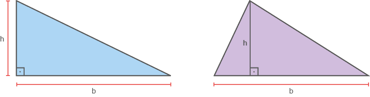
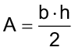
Em que:
- b é a medida da base do triângulo;
- h é a medida da altura do triângulo.
254
Acompanhe a situação a seguir.
- Determine a área dos triângulos abaixo:
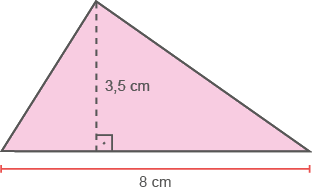
b = 8 cm
h = 3,5 cm
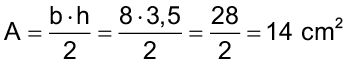
A área do triângulo é 14 cm².
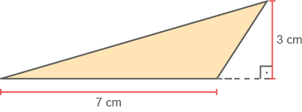
b = 7 cm
h = 3 cm
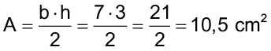
A área do triângulo é 10,5 cm².
Encontre soluções


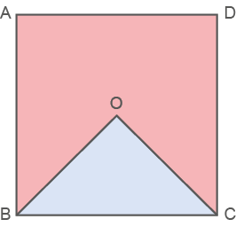
- Sabendo-se que o quadrado tem 24 cm de perímetro, determine a área da região rosada.
255
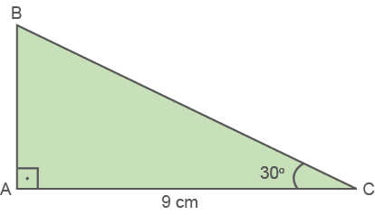
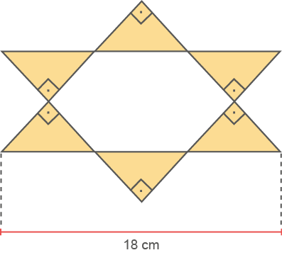
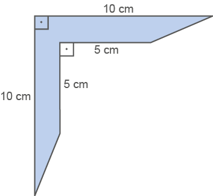
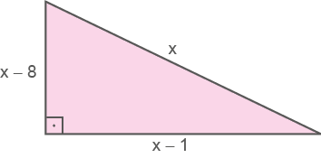
A área desse triângulo, em metros quadrados, é:
- 9. (OBMEP) No retângulo da figura temos AB = 6 cm e BC = 4 cm. O ponto E é o ponto médio do lado AB. Qual é a área da parte sombreada?
- a) 12 cm2
- b) 15 cm2
- c) 18 cm2
- d) 20 cm2
- e) 24 cm2